NCERT Solutions Class 9 Science Chapter 7 Diversity in Living Organisms – Here are all the NCERT solutions for Class 9 Science Chapter 7. This solution contains questions, answers, images, step by step explanations of the complete Chapter 7 titled Diversity in Living Organisms of Science taught in class 9. If you are a student of class 9 who is using NCERT Textbook to study Science, then you must come across Chapter 7 Diversity in Living Organisms. After you have studied lesson, you must be looking for answers of its questions. Here you can get complete NCERT Solutions for Class 9 Science Chapter 7 Diversity in Living Organisms in one place. For a better understanding of this chapter, you should also see Chapter 7 Diversity in Living Organisms Class 9 notes , Science.
NCERT Solutions for Class 9 Science Chapter 7 Diversity in Living Organisms
Topics and Sub Topics in Class 9 Science Chapter 7 Diversity in Living Organisms:
- Diversity in Living Organisms
- What is the Basis of Classification?
- Classification and Evolution
- The Hierarchy of Classification- Groups
- Plantae
- Animalia
- Nomenclature
These solutions are part of NCERT Solutions for Class 9 Science. Here we have given Class 9 NCERT Science Textbook Solutions for Chapter 7 Diversity in Living Organisms.
In-Text Questions Solved
NCERT Textbook for Class 9 Science – Page 80
Question 1. Why do we classify organisms?
Answer: For easier and convenient study we classify organisms.
Question 2. Give three examples of the range of variations that you see in life-forms around you.
Answer:
(a) Small cat and big cow
(b) Grass and banyan tree
(c) Black crow and green parrot
More Resources for CBSE Class 9
- NCERT Solutions
- NCERT Solutions Class 9 Maths
- NCERT Solutions Class 9 Social Science
- NCERT Solutions Class 9 English
- NCERT Solutions Class 9 Hindi
- NCERT Solutions Class 9 Sanskrit
- NCERT Solutions Class 9 IT
- RD Sharma Class 9 Solutions
CBSE Class 9 Science NCERT Textbook – Page 82
Question 1. Which do you think is a more- basic characteristic for classifying organisms?
(a) the place where they live.
(b) the kind of cells they are made of. Why?
Answer: Classification based on living place is more basic as there can be wide variations in organisms living in a given place.
Question 2. What is the primary characteristic on which the first division of organisms is made?
Answer: Nature of cell is the primary characteristics on which the first division of organisms is decided. Based on this criterion life forms can be classified into prokaryotes or eukaryotes.
Formulae Handbook for Class 9 Maths and ScienceEducational Loans in India
Question 3. On what bases are plants and animal’ out into different categories?
Answer: Mode of nutrition and presence or absence of cell walls.
CBSE Class 9 Science NCERT Textbook – Page 83
Question 1. Which organisms are called primitive and how are they different from the so-called – advanced organisms?
Answer: Organisms with simple cellular structure and no division of labour are called
primitive.
Advanced organisms, like mammals have millions of cells and there are different organs and organ system for different biological functions.
Question 2. Will adiKznced organisms be the same as complex organisms? Why? t
Answer: Yes, advanced organisms means greater degree of evolution which leads to more complexity.
CBSE Class 9 Science Ncert textbook Page 85
Question 1. Whaf is the criterion for classification of organisms as belonging to kingdom Monera or Protista?
Answer: It is the presence or absence of a well defined nucleus. Monera has no nuclear membrane, while Protista shows well defined nucleus.
Question 2. In which kingdom will you place an organism which is single-celled, eukaryotic and
photosynthetic?
Answer: Protista.
Question 3. In the hierarchy of classification, which grouping will have the smallest number of organisms with a maximum of characteristics in common and which will have the largest number of organisms?
Answer: Organisms belonging to Kingdom Monera will have the small number of organisms with a maximum of characteristics in common. And kingdom Animalia will have the largest number of organisms.
NCERT Textbook for Class 9 Science – Page 88
Question 1. Which division among plants has the simplest organisms?
Answer: Thallophyta or algae.
Question 2. How are pteridophytes different from the phanerogams?
Answer: Pteridophytes have naked embryo and inconspicuous reproductive organ whereas — phanerogams have well-differentiated reproductive organs and covered embryo.
Question 3. How do gymnosperms and angiosperms differ from each other?
Answer: Seeds are naked in Gymnosperms and are covered in angiosperms.
NCERT Textbook for Class 9 Science – Page 94
Question 1. How do poriferan animals differ from coelenterate animals?
Answer:
- Animals from Porifera show cellular level of organisation, while those from Coelenterata show tissue level of organisation.
- In Porifera there is no division of labour, while in Coelenterata some division of labour is seen.
- Porifera do not have coelom, while coelenterata have coelom.
Question 2. How do annelid animals differ from arthropods?
Answer:

Question 3. What are the differences between amphibians and reptiles?
Answer:

Question 4. What are the differences between animals belonging to the Aves group and those in the mammalia group?
Answer:

Extra Questions for CBSE Class 9 Science (Biology) Diversity in Living Organisms
Question 1. What are the advantages of classifying organisms?
Answer: Advantages of classification:
- Better categorization of living beings based on common characters.
- Easier study for scientific research.
- Better understanding of human’s relation and dependency on other organisms.
- Helps in cross breeding and genetic engineering for commercial purposes.
Question 2. How would you choose between two characteristics to be used for developing a hierarchy in classification?
Answer: Gross Character will “form-the basis of start of the hierarchy and fine character -will -form “the basis of further steps of single the hierarchy.
Example:
- Presence of vertebral column in human beings can be taken under vertebrata.
- Presence of four limbs makes them members of Tetrapoda.
- Presence of mammary glands keeps them under mammalia.
Question 3. Explain the basis for grouping organisms into five kingdoms.
Answer: Basis Of Clasiffication:
(a) Number of cells
(b) Layer of cells
(c) Presence or absence of cell wall
(d) Mode of nutrition
(e) Level Of organization
Question 4. What are the major divisions in the Plantae? What is the basis for these divisions?
Answer: Major Divisions of Kingdom plantea:
| Division | Basis of Classification |
| Thallophyta or Algae | Thallus like body |
| Bryophyta | Body is divided into leaf and stem |
| Pteridophyta | Body is divided into root, stem and leaf |
| Gymnosperm | Seed bearing, naked seeds |
| Angiosperm | Seed bearings covered seeds |
Question 5. How are the criteria for deciding divisions in plants different from the criteria for deciding the subgroups among animals?
Answer: In plants body basic structure is a major criteria based on which Thallophytes are different from Bryophytes. Apart from this absence or presence of seeds is another important criteria. Gymnosperms and angiosperms are further segregated based on if seeds are covered or not. It is clear that it is the morphological character which makes the basis for classification of plants.
In animals classification is based on more minute structural variations. So in place of morphology, cytology forms the basis. Animals are classified based on layers of cells, presence or absence of coelom. Further higher the hierarchy animals are classified based on presence or absence of smaller features, like presence or absence of four legs.
Question 6. Explain how animals in Vertebrata are classified into further subgroups.
Answer: Vertebrata is divided into two superclasses, viz. Pisces and Tetrapoda. Animals of Pisces have streamlined body with fins and tails to assist in swimming. Animals of Tetrapoda have four limbs for locomotion.
Tetrapoda is further classified into following classes:
(a) Amphibia: Are adapted to live in water and on land. Can breathe oxygen through skin when under water.
(b) Reptilia: These sire crawling animals. Skin is hard to withstand extreme temperatures.
(c) Aves: Forelimbs are modified into wings to assist in flying. Beaks are present. Body is covered with feathers.
(d) Mammalia: Mammary glands present to nurture young ones. Skin is covered with hair. Most of the animals are viviparous.
NCERT Solutions for Class 9 Science Chapter 7 Diversity in Living Organisms (Hindi Medium)
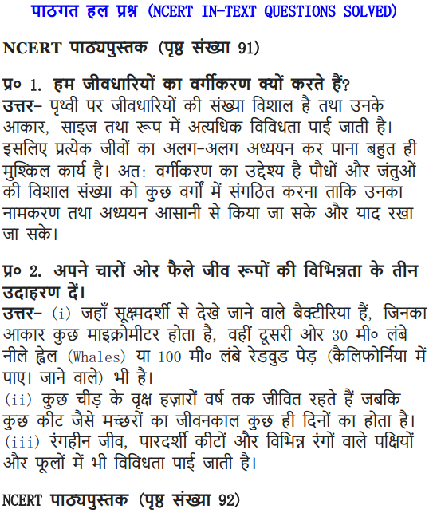
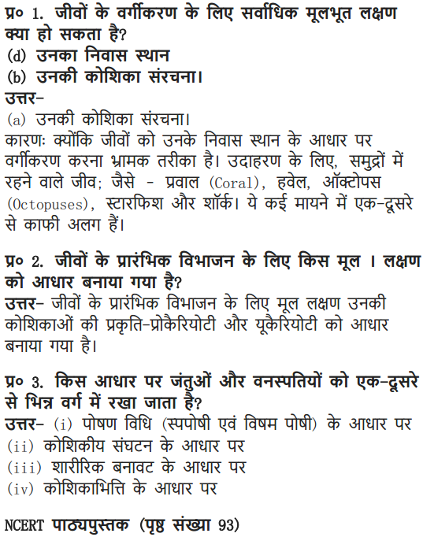
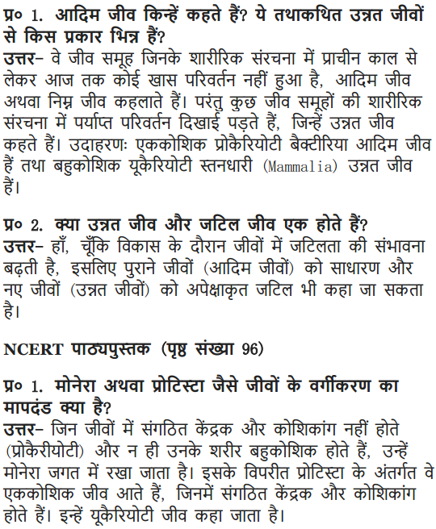
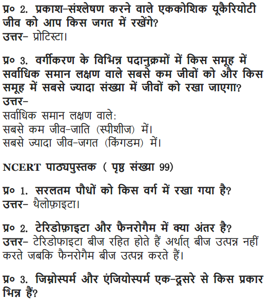
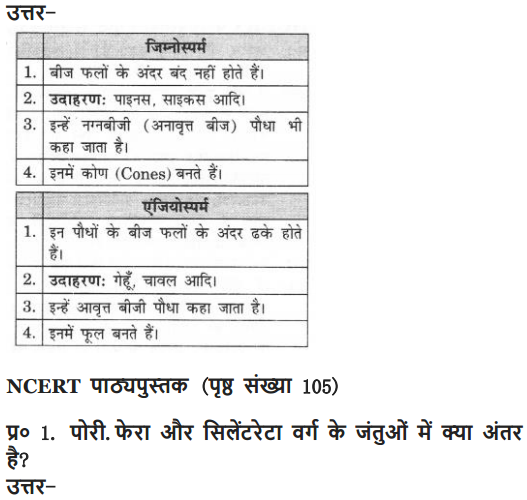
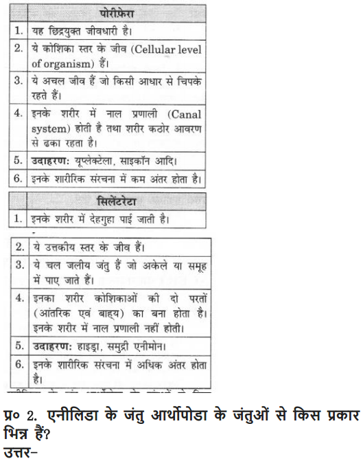
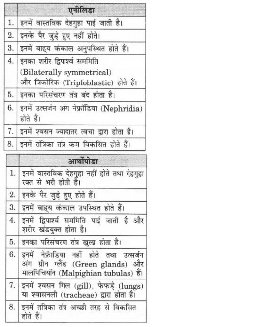
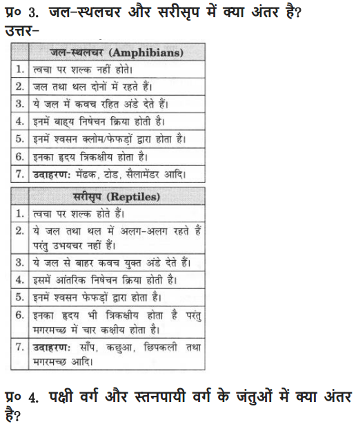
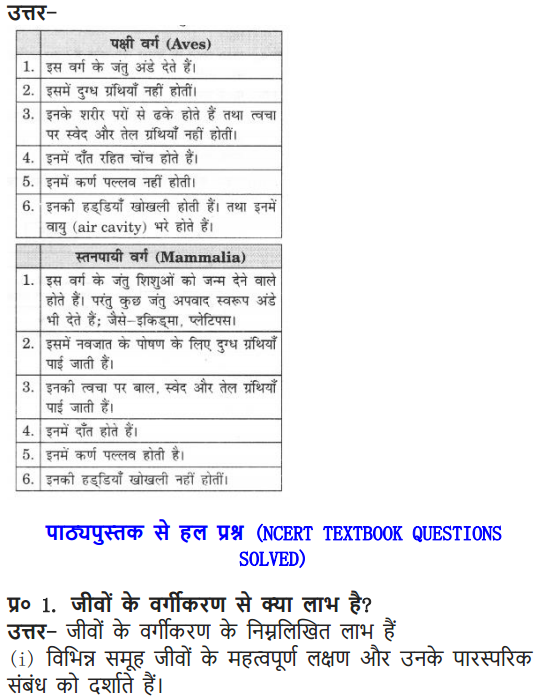
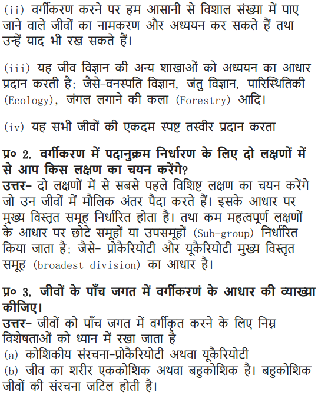
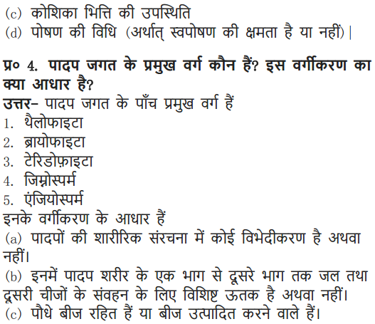
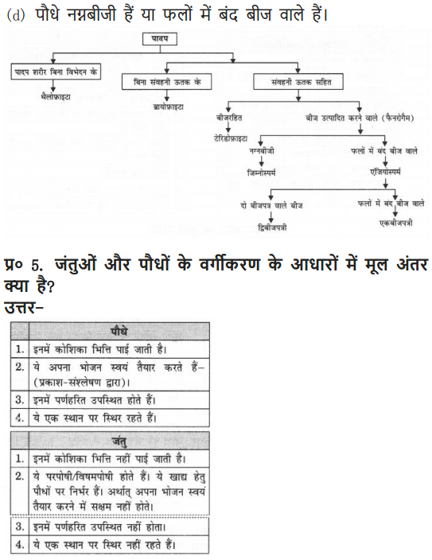
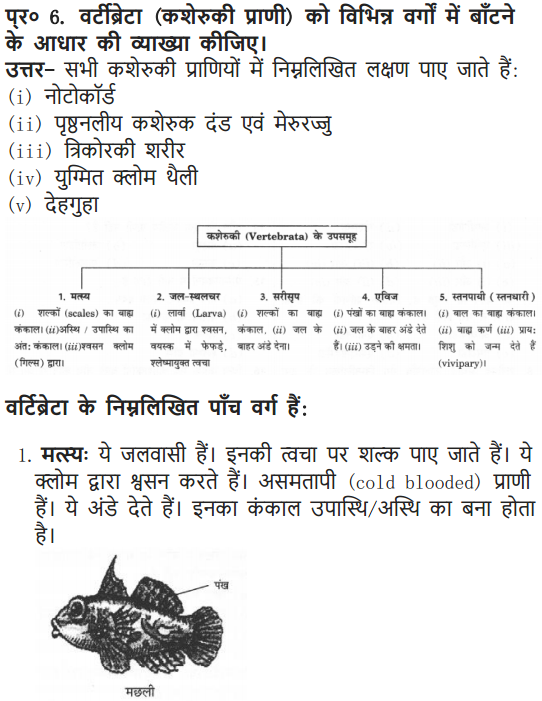
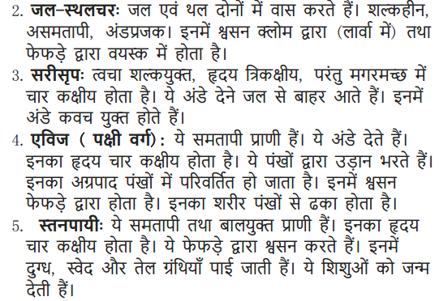
More Questions Solved
NCERT Solutions for Class 9 Science Chapter 7 Very Short Answer Questions
Question 1. Who wrote the book “The Origin of Species”?
Answer: Charles Darwin in 1859.
Question 2. Who proposed the classification of organisms into 5 kingdom?
Answer: Robert Whittaker (1959).
Question 3. Define species.
Answer: All organisms that <are similar to breed and perpetuate.
Question 4. Give example of the organism belonging to Monera and Protista Kingdom.
Answer: Monera—Anabaena, blue-gr^en algae Protista—Eugleno, Paramecium, Amoeba
Question 5. Name the appendages used for movement by organism belonging to Protista kingdom
Answer:
Paramecium – Cilia
Euglena – Flagella
Amoeba – Pseudopodia
Question 6. What is lichen?
Answer: The symbiotic association of fungi and blue-green algae, is called lichen.
Question 7. What is symbiotic relationship?
Answer: It is a relationship between two organisms in which both of them are benefitted, e.g., fungi gets food from blue-green algae and in return blue-green gets shelter [lichens].
Question 8. What is saprophytic nutrition?
Answer: The organisms using dead and decaying organic matter as food are said to show saprophytic nutrition.
Question 9. Give simple dassificatian of plant kingdom.
Answer:
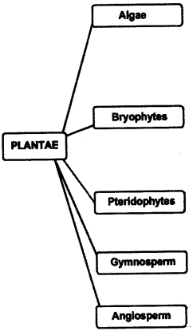
Question 10. Name the plant amphibian.
Answer: Biyophyta e.g. Funaria (Moss).
Question 11. What are cryptogamae?
Answer: The plants with inconspicuous reproductive organs are called cryptogamae, e.g., fern.
Question 12. Give examples of pteridophyte.
Answer: Marsilea and Fern.
Question 13. Name the reproductive organ of plants.
Answer: Flower.
Question 14. What are gymnosperms?
Answer: The group of plants that bear naked seeds e.g., pines, deodar.
Question 15. What are angiosperms?
Answer: The group of plants with covered seeds are called angiosperms. These are flowering plants.
Question 16. What are cotyledons?
Answer: Plant embryos in seeds have structures called cotyledons. Cotyledens are also known as seed leaves.
Question 17. Name the phylum of an animals with pores on it.
Answer: Porifera e.g., sponge.
Question 18. Name the phylum of Jellyfish
Answer: Coelenterata or Cnidaria.
Question 19. What is the meaning of triploblastic?
Answer: Animals which have three layers of cells from which differentiated tissues -can be made.
Question 20. What is bilateral symmetry?
Answer: When the left and right halves of the body have same design it is called bilateral symmetry.
Question 21. What is the meaning of “cold-blooded animal”?
Answer: Those animals who show the variation in their body temperature according to the surroundings are called cold-blooded animals, e.g., fish, amphibians, reptiles.
Question 22. Name two mammals that lay eggs.
Answer: Platypus and echidna.
Question 23. Name three mammals that live in water.
Answer: Whale, platypus and Dolphins.
Question 24. Name a fish with skeleton made up of cartilage.
Answer: Shark.
Question 25. Name two fish which have skeleton made up of both bone and cartilage.
Answer: Tuna and rohu.
Question 26. Name the reptile with four-chambered heart.
Answer: Crocodile.
NCERT Solutions for Class 9 Science Chapter 7 Short Answer Type Questions
Question 1. Give the characteristics of Monera.
Answer:
(a) Organisms are unicellular, do not have a defined nucleus.
(b) Organisms may have a cell wall or may not have cell wall.
(c) Mode of nutrition is either autotrophic or heterotrophic.
Question 2. Give the characteristics of Protista.
Answer:
(a) Organsims are unicellular and eukaryotic.
(b) Use appendages for locomotion like cilia, flagella, etc.
(c) Nutrition is either autotrophic or heterotrophic.
(d) E.g., algae, protozoa.
Question 3. Give the difference between thallophyta and bryophyta.
Answer:
| Thallophyta | Bryophyta |
| Body is thallus like not differentiated into -root, stem. Example: Spirogyra. | Plant Body is differentiated into stem and leaf like structures. Example: Moss. |
Question 4. What are hermaphrodites? Give two examples.
Answer: When an organism has both the sexes, i.e., it can produce both sperms and eggs are called hermaphrodites. Example: Sponges, earthworms.
Question 5. Give the difference between monocots and dicots.
Answer:
| Monocots | Dicots |
| 1. Seeds with one cotyledon.
2. Leaves have parallel venation. 3. Root system—fibrous. |
Seeds with two cotyledons.
Leaves have reticulate venation. Root system—tap root. |
Question 6. Give the difference between two types of symmetry that animals show.
Answer: Symmetry—Bilateral and Radial
| Bilateral Symmetry | Radial Symmetry |
| Any organism that has same design on left and right halves of the body. Example: Earthworm, spider, cockroach. | Any organisms with a body design such that it can be divided into two equal halves from any radius. Example: Starfish sea urchin. |
Question 7. Differentiate between vertebrates and invertebrates.
Answer:
| Vertebrates | Invertebrates |
| 1. Notochord is present.
2. True internal skeleton present. |
Notochord is absent.
No true internal skeleton present. |
Question 8. Name the phylum of the following animals:
(a) Tapeworm (b) Starfish
(c) Jellyfish (d) Octopus
Answer:
(a) Tapeworm – Flatyhelminthes
(b) Starfish – Echinodermatai
(c) Jellyfish – Coelenterata
(d) Octopus – Mollusca
Question 9. Identify the phylum for the following characteristics given:
(a) Organisms with joint appendages.
(b) Organisms are generally flat worms.
(c) Body is segmented.
(d) Skin of organisms is full of spikes.
Answer:
(a) Arthropoda
(b) Platyhelminthes
(c) Ann elida
(d) Echinodermata
Question 10. State the features of all chordates.
Answer: All chrodates possess the following features:
- Have a notochord
- Have a dorsal nerve chord
- Are triploblastic
- Have paired gill pouches
Question 11. Give general characteristics of Porifera.
Answer:
(a) Animals with pores all over the body.
(b) Body is not well differentiated.
(c) Non-motile animals, remain attached to solid support.
(d) Body is covered with hard outer skeleton. Example, sponges.
Question 12. How are pores or holes all over the body of Porifera important?
Answer: The pores or holes present all over the body of the organisms lead to a canal system that helps in circulating water throughout the body to bring in food and oxygen.
Question 13. Give general characteristics of ‘Platyhelminthes’?
Answer:
(a) These are flat worms.
(b) Most of them are parasites.
(c) Animals are triploblastic
(d) No true internal body cavity.
E.g., Tapeworm, planaria, Liver fluke.
Question 14. Give specific characteristics of Coelenterata.
Answer:
(a) Water living animals.
(b) Body is made of two layers of cells.
(c) Some of them live in colonies (corals), while others have solitary life-span {Hydra).
(d) Body cavity present.
Question 15. Give the characteristics of Arthropoda with 2 examples.
Answer:
(a) Arthropoda means jointed legs’.
(b) Animals are bilaterally symmetrical and segmented.
(c) It has an open circulatory system.
(d) This is the largest group of animals.
Example: Spider, scorpionts, crabs, house flies.
Question 16. Give the characteristic features of Echinodermata.
Answer:
(a) Spikes present on skin.
(b) Free living, marine animals.
(c) Triploblastic and have a coelomic cavity.
(d) Have a peculiar water driven tube system used for moving around.
(e) Have hard calcium carbonate structure that is used as a skeleton.
Example, Starfish, seaurchin.
Question 17. Give the characteristics of mammals.
Answer:
(a) Mammals are warm-blooded animals.
(b) Four-chambered heart.
(c) Mammary glands for production of milk to nourish their younger one.
(d) Skin has hairs, sweat glands and oil glands.
(e) Most of them produce their young ones (viviparous).
Question 18. What are the conventions followed for writing the scientific names?
Answer: The conventions followed while writing the scientific names are:
1. The name of the genus begins with a capital letter.
2. The name of the species begins with a small letter.
3. When printed, the scientific name is given in italics.
4. When written by hand, the genus name and the species name have to be underlined separately.
Question 19. Differentiate between algae and fungi
Answer:
| Algae | Fungi |
| 1. Contain chlorophyll (green in colour).
2. Autotrophic nutrition. 3. Food is stored in the form of starch. |
1. Do not contain chlorophyll (non-green)
2. Heterotrophic nutrition. 3. Food is stored in the form of glycogen. |
Question 20. Name the phylum of the following organisms, whose exclusive characteristics is given below:
(a) Hollow bones (b) Jointed appendages
(c) Flat worm (d) Round worms, parasitic
(e) Soft body, muscular marine animal (f) Radially symmetrical, spiny skin.
Answer:
(a) Phylum chordata, subphylum—vertebrata, class—Aves
(b) Phylum—Arthropoda
(c) Phylum—Platyhelmithes
(d) Phylum—Aschelminthes
(e) Phylum—Mollusca
(f) Phylum—Echinodermata
Question 21. Give the characteristibs of amphibians.
Answer: Amphibians are vertebrates that lives on land and in water.
(a) They are cold-blooded.
(b) Heart is three-chambered.
(c) Fertilization is external.
(d) Respiration through lungs on land and through moist skin when in water. Example, Frog, Toads
Question 22. Give the characteristics of Aves.
Answer:
(a) Aves/birds can fly.
(b) Streamlined body.
(c) Hollow and light bones.
(d) Forelimbs are modified into wings.
(e) Warm-blooded animals, heart with four chambers.
(f) Egg laying animals.
(g) Beak present, teeth are absent.
Question 23. Why do most of the amphibians lay their eggs in water and reptiles lay their eggs on land?
Answer: Amphibians lay their eggs in water because the tadpeles or young, ones that hatch out of egg has gills at initial stages, that allows them; to breathe in water.
In case of reptiles the young ones that hatch out does not have gplls> and the hatching of eggs requires warmth that is given by the mother, reptile.
Question 24. Give the hierarchy of 5 kingdom classification of living world.
Answer:
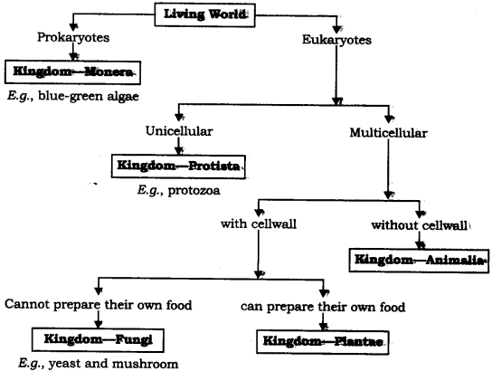
NCERT Solutions for Class 9 Science Chapter 7 Long Answer Type Questions
Question 1. What is the importance of classification?
Answer: Classification is important because:
(a) Classification makes the study of wide variety, of organisms, systematic and easier.
(b) It projects a picture of all organisms and their interrelation with each other.
(c) It provides a base for the study of other branches of biology.
(d) It is useful in the study of ecology, which deals with; the inter-relation of an organism with their environment.
(e) It helps to establish a hierarchy of groups of organisms.
Question 2. What are the characteristic features of mammals?
Answer: Characteristics features of mammals: –
(a) Body is covered with hair.
(b) Skin is provided with sweat and sebaceous glands.
(c) Heart is four-chambered.
(d) Fertilization is internal.
(e) Females have mammary glands to produce milk to nourish their young ones.
(f) External ear—pinna, present.
(g) Eyes have eye lids.
(h) Warm-blooded.
(i) Respiration through lungs,
(j) Body cavity divided’ into- thorax and1 abdomen by muscular diaphragm.
Question 3. What are the characteristic features of reptiles?
Answer: The characteristics of reptiles:
(a) Dry scaly, impermeable skin.
(b) Respiration through lungs.
(e) Cold-blooded
(d) Internal fertilization.
(e) Heart is three chambered’.
(f) Two pairs of pentadactyl limbs are present.
Question 4. What are the basis for classification of organisms?
Answer: The basis for classification are:
(a) Presence or absence of nucleus.
(b) Organisms are unicellular, or multicellular.
(c) Level of organisation.
(d) Autotrophic mode of nutrition or heterotrophic mode of nutrition.
(e) Of the organisms that perform photosynthesis (Plants), their level, or organisation of the body.
(f) Of the animals, how does the individuals body develop and organise its different parts.
Question 5. Give the characteristics of fiat worms, round worms and segmented worm. Give their phylum.
Answer:
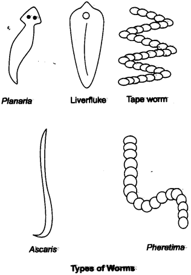
| Flat worms | Round worms | Segmented worms |
| Phylum—Platyhelminthes | Phylum Nematoda | Phylum Annelida |
| Dorsoventrally flat, i.e., flat body from top to bottom. | Body is cylindrical. | Body is segmented from head to tail. |
| No true body cavity. | Pseudocoelom (Sort of body (cavity). | True body cavity. |
| Mostly hermaphrodite, i.e., male and female sex organs present in the same individual. | Sexes are separate. | May be unisexual or bisexual. |
Question 6. Give the classification of the plant kingdom.
Answer:
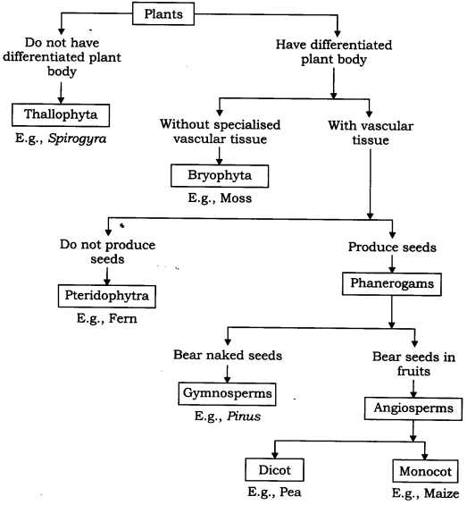
Question 7. Differentiate (5 points) between monocot and dicot plants.
Answer:
| Monocot Plants | Dicot Plants |
| 1. Fibrous root
2. Parallel venation 3. Seeds with one cotyledon 4. Vascular bundles are scattered. 5. Flowers are trimerous |
Taproot
Reticulate venation. Seeds with two cotyledons Vascular bundles are arranged in rings. Flowers are pentamerous, flowers or tetramerous |
Question.8. Give the outline classification of animal kingdom.
Answer.
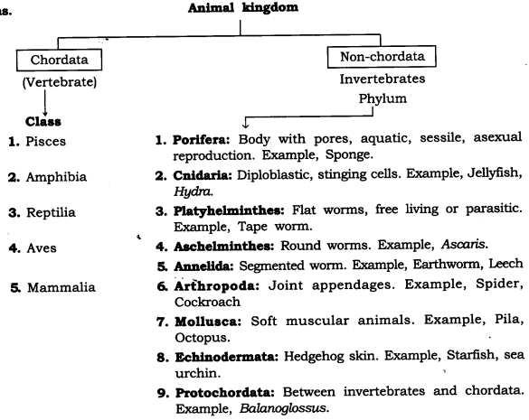
NCERT Solutions for Class 9 Science Chapter 7 Activity -Based Questions
Question 1.
- We have heard of ‘desi’ cows and Jersey cows.
- Does a desi cow look like a Jersey cow?
- Do all desi cows look alike.
- Will we be able to identify a Jersey cow in a crowd of desi cows that don’t look like each other?
- What is the basis of our identification?
Answer:
- Desr cow is different in size’ and colour.
- Most of the desi cows look alike, not all.
- Yes, Jersey cow can be spotted’ from the group.
- Basis of identification:
- Size, horn shape, skin colour, height, etc.
Question 2.
- Soak seeds of green gram, wheat, maize, peas and tamarind Once they become tender, try to split the seed. Do all the seeds break into two nearly equal halves?
- The seeds that do are the dicot seeds and the seeds that don’t are then; monocot seeds.
- Now take a look at the roots, leaves and flowers of these plants.
- Are the roots, tap roots or fibrous?
- Do the leaves have parallel or reticulate venation?
- How many petals are found in the flowers of these plants?
- Can you write down further characteristics of monocots and dicots on the basis of these observations?
Answer:
| Characteristics | Green gram | Wheat | Maize | Peas | Tamarind |
| 1. Roots | Tap root | Fibrous root | Fibrous root | Tap root | Tap root |
| 2. Cotyledon | Dicotyledon. | Monocotyledon | Monocotyledon | Dicotyledon. | Dicotyledon. |
| 3. Venation in leaves | Reticulate | Parallel | Parallel | Reticulate | Reticulate |
| 4. Vascular bundle | In a ring | Not in a ring | Not in a ring | In a ring | In a ring |
| 5. Flowers | Pentamerous | Trimerous | Trimerous | Pentamerous | Pentamerous |
Question 3. Find out the. names of the following, animals and plants in as many: languages as you can.
Answer: It is difficult to remember names of a species in different languages This problem means there was a need for some system to create unifhrm naming convention: Hence system of nomenclature and classification was devised
| Animals | Plants |
| 1. Frog—Rana tigrina
2. Human—Homo Sapiens 3. Peacock—Pam cristatus 4. Honeybee—Apis cerena, Apis indica. |
1. Touch me not—Mimosa pudica.
2. Neem—Azadirachta indica. 3. Maize—Zea mays. |
NCERT Solutions for Class 9 Science Chapter 7 Value-Based Questions
Question 1. Many medicinal plants every year are getting extinct. A group of students who had gone for educational trip clicked photographs of endangered plants. These photograph were used by the school laboratory to study these plants.
(a) Name two endangered plants.
(b) Name any one medicinal plant and give its medicinal use.
(c) What value of students is reflected in the above act?
Answer:
(a) Two endangered plants are:
(i) Euphrasia
(ii) Ubnus rubra
(b) Aloe-vera. Juice of Aloe-vera is used in case of indigestion, treating dkin infection etc.
(c) Students are caring citizens, shows responsible behaviour.
Question 2. Due to global warming coral is getting diminished in all the oceans/ water bodies. People in Lakshadweep island protects their corals by not allowing people/tourist to scape take few pieces away.
(a) Name the phylum of coral.
(b) What is coral made up of.
(c) What values of people in Lakshadweep island is reflected?
Answer:
(a) Phylum of coral is coelenterata.
(b) Coral is made up of calcium carbonate.
(c) People in Lakshadweep island reflect the value of-being-responsible (Citizen, respecting environment and nature.